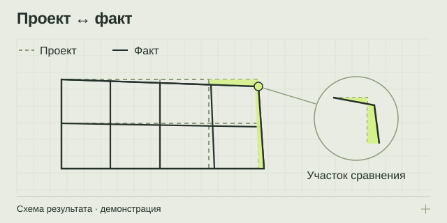

НАПРАВЛЕНИЕ 04 / ЗАКАЗЧИКАМ СТРОИТЕЛЬСТВА И ПРОЕКТНЫМ КОМАНДАМ
Сравнение проекта и фактической геометрии
Сделайте расхождения видимыми: получите карты отклонений, контрольные сечения и таблицы с понятными условиями сравнения.
Карты отклонений + сечения + таблицы
PDF / CSV / согласованная 3D-выдача

Из задачи — в проверяемый результат
Когда размеры или расположение конструкций вызывают вопросы, нужно сначала отделить измеренное расхождение от предположения. Сопоставление проекта и факта помогает определить, где именно геометрия отличается от выбранной проектной версии. Результат зависит от корректного совмещения данных, качества измерений и ясного перечня контролируемых параметров. Цветная карта полезна, только если сопровождается объяснением метода и ограничений.
Какие вопросы можно поставить
Например: как фактическое положение элемента соотносится с проектом; отличаются ли размеры проёмов; где находятся участки отклонения плоскости; как взаимно расположены видимые конструкции. Перечень вопросов определяет зоны съёмки, требования к проектным материалам и состав отчёта.
Если конечная задача — оценить качество работ или значение расхождений для спора, измерительные данные становятся частью более широкого исследования. Инженерная и правовая интерпретация не сводится к цвету участка на визуализации.
Как проводится сопоставление
- Фиксируем основу сравнения. Указываются версия проекта, контрольные элементы и критерии.
- Оцениваем исходную геометрию. Проверяются охват, точность и пригодность имеющихся измерений.
- Согласуем совмещение. Выбираются опорные данные, система координат и правила сравнения.
- Рассчитываем расхождения. Подготавливаются карты, сечения и численные значения.
- Объясняем результат. Отдельно обозначаются зоны недостаточных данных и ограничения интерпретации.
Что входит в результат
- Карты отклонений с указанной шкалой, единицами и объектами сравнения.
- Контрольные сечения по согласованным направлениям.
- Таблицы расхождений для выбранных размеров или элементов.
- Пояснения к методике: использованные версии файлов, правила совмещения и границы применимости.
Формат отчёта должен позволять проверить происхождение цифр. Иллюстрации без привязки к данным и условиям измерения недостаточны для уверенной инженерной оценки.
Что подготовить до начала
Нужны актуальная версия проекта, список контролируемых конструкций или поверхностей и цель сравнения. Сообщите, имеются ли облака точек, исполнительные материалы или предыдущие измерения. Если критерии отклонений определены проектом или заданием, передайте их вместе с исходными данными.
Следует отдельно уточнить координаты, единицы измерения, изменения проекта и состояние объекта на дату съёмки. Если разные участники работают с разными версиями документации, сначала необходимо выбрать согласованную основу.
От чего зависит объём работы
Расчёт учитывает площадь, количество элементов, сложность совмещения, качество проекта, нужное число сечений и форму отчёта. Дополнительные измерения, восстановление недостающих данных и подробная интерпретация увеличивают состав задачи.
Удобно заранее разделить измерительный этап и экспертную оценку. Тогда в предложении видно, какие материалы будут получены, кто формулирует выводы и какие вопросы требуют иных методов исследования.
Ответы перед заказом
Можно сравнить объект только с PDF-чертежом?
Возможность зависит от содержания и качества документа. Иногда потребуются дополнительные координаты, размеры или подготовка геометрии проекта. Это оценивается до согласования состава работ.
Красная зона на карте означает опасность?
Нет. Цвет показывает диапазон выбранного параметра при заданной шкале. Вывод о техническом состоянии требует самостоятельного обоснования и при необходимости дополнительных исследований.
Что делать, если проект менялся во время строительства?
Укажите версии, даты и согласованные изменения. Для каждого сравнения нужно явно назвать использованную основу, иначе расхождение может оказаться результатом сопоставления разных редакций.
Подготовьте вводные без лишней переписки
Откройте памятку: она помогает описать объект, собрать исходные данные и выбрать нужный результат.
Что подготовить для расчёта ↗ОТ ЗАДАЧИ К СОСТАВУ РАБОТ
Обсудим ваш объект
Подготовьте город, тип и примерную площадь объекта, цель работ и имеющиеся документы. В брифе можно собрать вводные и открыть письмо экспертному партнёру.
Экспертный партнёр — АНО «МСК-Эксперт»: +7 495 648-50-91 · официальный сайт и форма обращения ↗. При нажатии на почтовую ссылку откроется ваша программа: письмо отправляете вы.